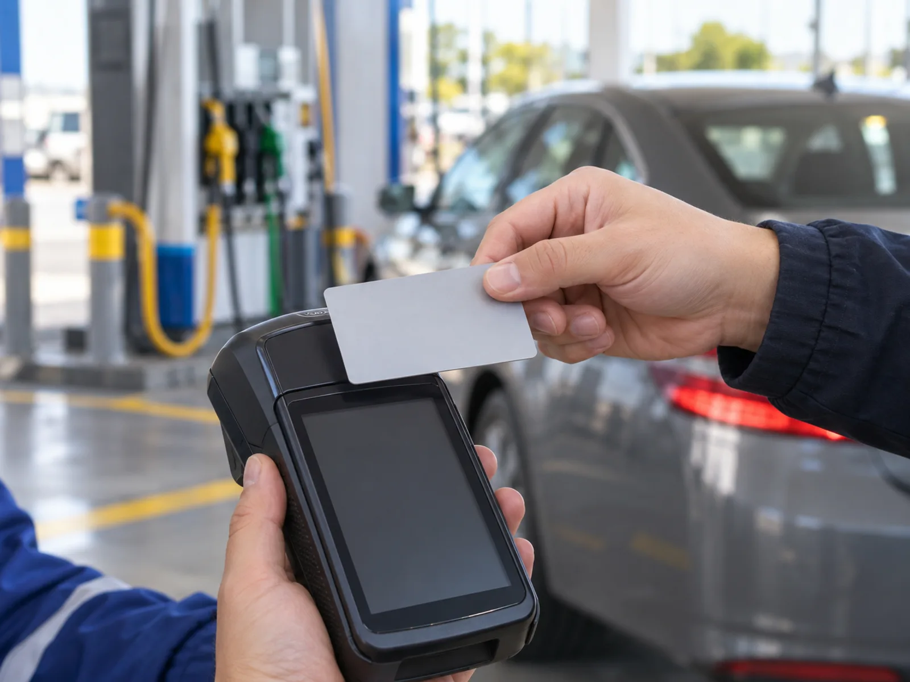
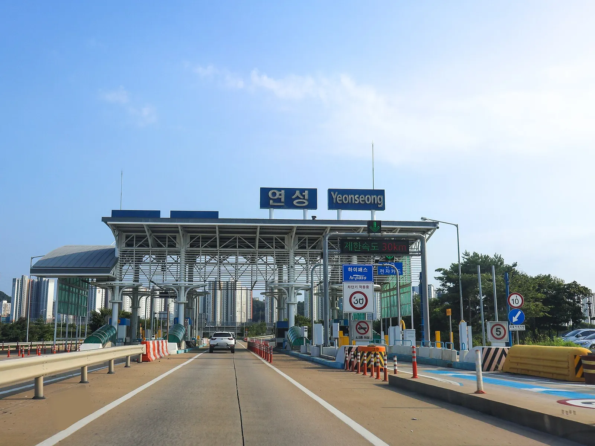
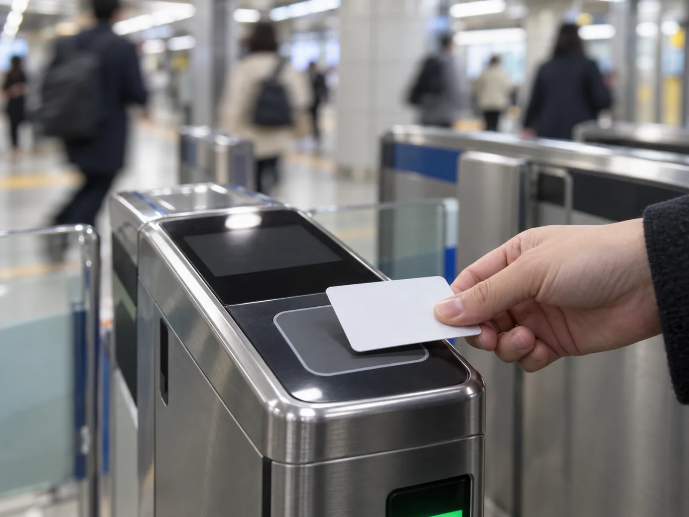
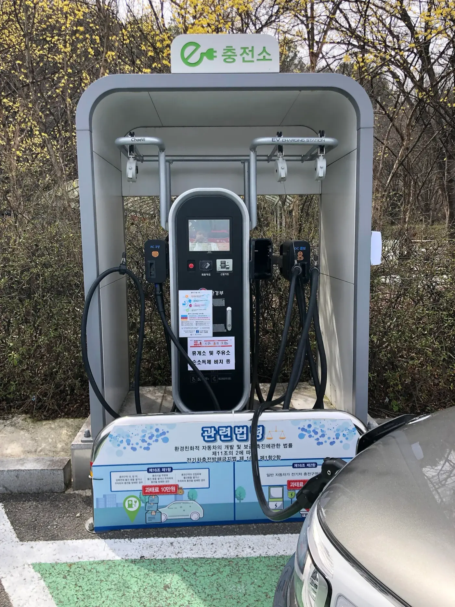

▲ 주유소 결제는 일반 가맹점 사용분으로 신용카드 소득공제 대상이다 ⓒ HappyMidnight / Wikimedia Commons, CC BY-SA 3.0
"주유비는 공제된다는데 통행료는 왜 안 되지?" 연말정산 시즌이 되면 운전자들이 가장 많이 헷갈리는 질문이다. 차를 굴리는 데 드는 돈은 크게 신용카드 소득공제 대상, 대상 제외, 보험료 세액공제 세 갈래로 나뉘고, 같은 '자동차 관련 지출'이라도 어느 갈래에 들어가느냐에 따라 환급액이 완전히 달라진다.
카프리즘은 국세청·정책브리핑·법령 자료를 대조해 2025년 귀속(2026년 2월 정산, 이미 끝난 정산)과 2026년 귀속(2027년 2월 정산, 올해 쓰는 돈), 그리고 8월 발표된 2026년 세제개편안(정부안)이 적용되는 2027년 귀속을 구분했다. 마지막에는 연봉별 절세액을 직접 계산한 표를 붙였다.
1. 세 개의 연도를 먼저 구분하자 — 2025·2026·2027 귀속
가장 흔한 착각은 "내년 2월 정산에 새 법이 다 적용된다"는 것이다. 연말정산은 사용한 해(귀속연도)의 법이 적용된다. 오늘(2026년 10월 2일) 기준으로 시점을 나누면 다음과 같다.
| 구분 | 사용 기간 | 정산 시기 | 현재 상태 |
|---|---|---|---|
| 2025년 귀속 | 2025.1.1~12.31 | 2026년 2월 (이미 종료) | 국세청이 2025.12.22 안내한 기준. 수영장·체력단련장 이용료 30% 추가(2025.7.1 사용분부터, 한국세정신문 등 보도로 시행일 확인·국세청 원문은 국세청 확인). 놓친 공제는 경정청구 가능 여부 국세청 확인 |
| 2026년 귀속 (올해) | 2026.1.1~12.31 | 2027년 2월 | 자녀 수에 따른 기본한도 확대가 2026.1.1 이후 사용분부터 적용되는 것으로 안내됨(별개로 신용카드 소득공제 제도 적용기한은 2028.12.31까지 연장) — 세부는 국세청 확인 |
| 2027년 귀속 (정부안) | 2027.1.1~12.31 | 2028년 2월 | 2026 세제개편안(2026.8 발표): 대중교통 우대공제 폐지·추가한도 100만원 하향 등. 정부안, 확정 전(정기국회 심의 대상) |
▲ 주유소 결제는 일반 가맹점 사용분이라 카드 소득공제 대상이다. 이 사진은 현장 예시이며 특정 영수증·계산 장면이 아니다 ⓒ HappyMidnight / Wikimedia Commons, CC BY-SA 3.0
📍 이번 글의 확인 범위
신용카드 공제의 공제율·한도·제외 항목은 조세특례제한법 제126조의2와 여신금융협회 안내를, 자녀 한도와 2025년 귀속 변경점은 정책브리핑(기획재정부·국세청 보도)을, 2026 세제개편안은 8월 발표 보도를 대조했다. 개별 업종·결제방식의 적용 여부는 가맹점 업종 코드에 따라 달라질 수 있어 국세청 확인으로 표시했다.
2. 자동차 관련 지출, 되는 것과 안 되는 것 — 카프리즘 판정표
핵심은 "카드로 결제했느냐"가 아니라 "무엇을 샀느냐"다. 법령과 여신금융협회 안내의 제외 항목에 차량 관련 지출을 하나씩 대입해 정리했다.
| 지출 항목 | 카드 소득공제 | 근거·메모 |
|---|---|---|
| 신차 구입비 | 대상 아님 | 자동차 구입비용은 제외 항목. 카드로 결제해도 공제 없음 |
| 중고차 구입 | 구입금액의 10%만 포함 | 2017년부터 적용. 판매업자 결제 여부 등 요건은 국세청 확인 |
| 주유비(휘발유·경유·LPG) | 대상 | 일반 가맹점 사용분. 신용 15%, 체크·현금영수증 30% |
| 전기차 충전요금 | 대상으로 통용(결제 경로별 국세청 확인) | 충전사업자에 카드로 결제하면 일반 사용분으로 안내되는 경우가 많음. 한전 요금 고지서 납부형은 공과금 성격이라 별도 확인 |
| 고속도로 통행료(하이패스 포함) | 대상 아님 | 도로통행료는 제외 항목. 휴게소 식음료·주유는 별개의 일반 사용 |
| 자동차보험료 | 카드 공제 아님 | 보험료·공제료는 제외. 대신 보장성보험료 세액공제 검토(5장) |
| 자동차 리스료·렌트료 | 대상 아님 | 리스료(자동차대여사업의 대여료 포함)는 제외 항목 |
| 자동차세 | 대상 아님 | 국세·지방세는 제외. 별도 소득공제 없음 |
| 정비·세차·타이어 교체 | 대상(일반 사용) | 가맹점 업종·결제방식에 따라 달라질 수 있어 애매한 건은 국세청 확인 |
| 주차요금 | 일반 상업주차장은 대상 가능, 공영주차장은 국세청 확인 | 국가·지자체 사용료는 원칙적으로 제외 후 예외 열거 |

▲ 통행료는 하이패스 선불·후불 어느 쪽으로 결제해도 신용카드 소득공제 사용금액에서 제외된다. 사진은 서울요금소 하이패스 차로 현장이다 ⓒ P.Cps1120a / Wikimedia Commons, CC BY-SA 3.0
통행료 감면 제도는 따로 있다. 다자녀·장애인 감면은 고속도로 통행료 다자녀·장애인 감면 정리에서 확인할 수 있다.
3. 공제는 이렇게 계산된다 — 25% 문턱, 공제율, 한도
카드를 많이 쓴다고 바로 공제되는 것이 아니다. 총급여의 25%를 넘긴 금액부터 공제가 시작되고, 이 25%는 공제율이 낮은 신용카드 사용액부터 먼저 차감된다. 그래서 같은 금액을 써도 결제수단 비중에 따라 환급액이 달라진다.
| 사용 유형 | 공제율 | 비고 |
|---|---|---|
| 신용카드 | 15% | 25% 문턱 초과분에 적용 |
| 체크카드·직불·선불카드·현금영수증 | 30% | 주유소 현금영수증도 포함 |
| 전통시장 사용분 | 40% | 추가공제 한도 대상 |
| 대중교통 사용분 | 40% | 현행. 2027.1.1 사용분부터 폐지가 정부안(6장) |
| 도서·공연·박물관·미술관·영화관람료·수영장·체력단련장 | 30% | 총급여 7천만원 이하만(현행). 수영장·체력단련장은 2025.7.1 사용분부터 |
| 총급여 | 기본한도 | 추가공제 한도(전통시장·대중교통·문화 합산) |
|---|---|---|
| 7천만원 이하 | 300만원 | 최대 300만원(전통시장 100 + 대중교통 100 + 문화 100) |
| 7천만원 초과 | 250만원(조세특례제한법 제126조의2 기준, 1.2억 초과 등 별도 하위 구간은 현행 조문에 없는 것으로 확인. 개별 적용은 국세청 확인) | 최대 200만원(전통시장 100 + 대중교통 100) |
| 2026 귀속 자녀 가산(총급여 7천만원 이하) | 자녀당 +50만원, 최대 +100만원 | 7천만원 초과는 자녀당 +25만원, 최대 +50만원 |
정부안의 한도 배분(문화·시장 합산 방식 등)은 보도마다 표현이 달라 국회 심의 과정에서 달라질 수 있다.
✅ 주유비가 공제에 "도움이 안 되는" 경우
· 총급여 25% 문턱을 넘기지 못하면 주유비를 아무리 써도 공제액은 0원
· 이미 기본한도(300만원 등)를 채웠다면 추가 지출은 공제에 반영되지 않음
· 신용카드 할인·적립 혜택이 큰 카드는 공제 손실과 비교해 실질 혜택을 따져 볼 것
· 맞벌이는 문턱을 넘길 수 있는 쪽 카드에 몰아 쓰는 편이 유리한 경우가 많음

▲ 주유소에서의 카드 결제는 일반 신용·체크카드 사용분으로 집계된다. 내용 이해를 돕는 예시 이미지다 ⓒ CarPrism (AI 생성 이미지)
4. 직접 계산해 봤다 — 연봉·사용액별 절세액
가정이 곧 결과다. 아래 계산은 카프리즘이 만든 단순 모델이며, 개인 상황에 따라 크게 달라질 수 있다.
📍 계산 가정
① 2026 귀속 현행 공제율·한도 적용(자녀 가산 제외) ② 25% 문턱은 신용카드 → 체크카드 → 전통시장 → 대중교통 순으로 차감 ③ 문화비·소비증가분 공제는 제외 ④ 추가공제 한도 안에서 계산 ⑤ 세금 절감액 = 공제액 × 한계세율(4천만원 15%, 6천만원 15%, 8천만원 24% 가정), 지방소득세 10%는 별도 합산 ⑥ 근로소득공제·인적공제 등 반영 전 단순 모델이며 한계세율은 가정치 ⑦ 사용액은 예시이며 주유비는 신용카드 사용액에 포함. 실제 세율은 과세표준에 따라 달라 국세청 확인
| 구분 | 총급여 4,000만원 | 총급여 6,000만원 | 총급여 8,000만원 |
|---|---|---|---|
| 연간 사용액(신용/체크/시장/대중교통) | 1,000 / 400 / 30 / 120 | 1,500 / 600 / 50 / 120 | 2,000 / 500 / 50 / 120 |
| 총 사용액 | 1,550 | 2,270 | 2,670 |
| 25% 문턱(최저사용금액) | 1,000 | 1,500 | 2,000 |
| 문턱 차감 후 공제 대상 | 체크 400, 시장 30, 대중교통 120 | 체크 600, 시장 50, 대중교통 120 | 체크 500, 시장 50, 대중교통 120 |
| 공제액 합계 | 180 | 248 | 218 |
| 적용 한계세율(가정) | 15% | 15% | 24% |
| 소득세 절감액 | 약 27 | 약 37 | 약 52 |
| 지방소득세 포함 | 약 29.7 | 약 40.9 | 약 57.6 |
결과를 보면 총급여 4천만원 기준 약 30만원, 6천만원은 약 41만원, 8천만원은 약 58만원 수준이다. 8천만원 구간은 문턱이 높아 공제액은 6천만원보다 적지만, 세율이 높아 절세액은 더 크다.
▲ 연말정산 때는 카드 사용액과 영수증을 모아 공제 문턱을 직접 계산해 보게 된다. 내용 이해를 돕는 예시 이미지이며 실제 자료가 아니다 ⓒ CarPrism (AI 생성 이미지)
그렇다면 주유비 자체는 얼마나 영향을 줄까. 문턱을 이미 넘긴 사람이 월 20만원, 연 240만원을 주유에 쓴다고 가정해 한계 효과만 따로 계산했다.
| 결제수단 | 공제율 | 공제액 | 한계세율 15% 절세(지방 포함) | 한계세율 24% 절세(지방 포함) |
|---|---|---|---|---|
| 신용카드 | 15% | 36 | 5.4 (5.9) | 8.6 (9.5) |
| 체크카드·현금영수증 | 30% | 72 | 10.8 (11.9) | 17.3 (19.0) |
📍 "신용에서 체크로 옮기면 연 5만원 안팎"
같은 주유비라도 체크카드나 현금영수증으로 결제하면 공제액이 두 배가 된다. 위 가정(15%)에서는 차이가 연 5만원 안팎이다. 다만 신용카드 주유 할인이 리터당 수십 원이라면 연 240만원 기준 혜택 크기를 직접 비교해야 한다. 이 수치는 문턱을 넘긴 경우에만 성립하며, 문턱 이전 사용분은 공제 효과가 없다.

▲ 전기차 충전요금도 카드로 결제하면 일반 사용분으로 안내되는 경우가 많지만, 결제 경로별 판단은 국세청 확인이 필요하다 ⓒ Immanuelle / Wikimedia Commons, CC BY 4.0
전기차 충전요금의 구조와 구독 요금제 비교는 전기차 충전요금 구조·구독 비교 기사에서 정리했다.
자녀 가산이 붙으면 얼마나 달라질까. 2026 귀속부터 총급여 7천만원 이하·자녀 2명이면 기본한도가 100만원 늘어난다. 한도를 꽉 채운 가구라면 늘어난 한도 100만원 × 15% 세율 = 최대 약 15만원이 추가로 줄 수 있다. 정책브리핑이 소개한 사례(총급여 6천만원·부양가족 2명, 한도까지 사용 시 약 15만원 감소)와 같은 크기다. 한도를 못 채운 가구는 효과가 없다.
5. 자동차보험료·자동차세·리스료 — 카드 공제 밖의 이야기
자동차보험료는 카드로 내도 카드 공제 대상이 아니다. 대신 보험료를 낸 사람이 보장성보험료 세액공제를 받을 수 있는지 따져 봐야 한다. 일반적인 구조는 아래와 같다.
| 항목 | 공제 방식 | 핵심 수치·조건 |
|---|---|---|
| 자동차보험료 | 보장성보험료 세액공제(후보) | 연 납입보험료 100만원 한도 × 12%(최대 12만원, 지방세 포함 13.2만원). 다른 보장성보험료와 합산 한도. 계약자·피보험자 요건은 홈택스 간소화 자료·국세청 확인 |
| 장애인 전용 보장성보험 | 별도 한도 세액공제 | 일반 보장성보험과 한도가 별도. 공제율·대상은 국세청 확인 |
| 자동차세 | 공제 없음 | 지방세로 카드 공제 제외, 별도 소득·세액공제 없음 |
| 리스료·렌트료(개인) | 카드 공제 제외 | 자동차대여사업의 대여료 포함해 제외 항목 |
| 개인사업자 업무용 차량 | 필요경비·감가상각 등 별도 | 근로자 연말정산이 아닌 종합소득세 영역. 개인사업자 리스·렌트 세제 혜택 기사 참고 |
📍 보험료 세액공제 계산 예시
자동차보험료가 연 80만원이고 다른 보장성보험이 없다면 80만원 × 12% = 9만6천원이 세액공제 후보다. 이미 다른 보장성보험료로 100만원을 채웠다면 자동차보험료는 추가 공제가 없다. 이 계산은 단순 모델이며 실제 공제 가능 여부는 홈택스 간소화 자료와 국세청 확인이 우선이다.
보험료 절감 자체가 환급보다 효과가 큰 경우도 많다. 갱신 시 챙길 수 있는 할인은 운전습관 연계 보험 할인과 갱신 할인·특약 가이드에서 확인할 수 있다.

▲ 고속도로 요금소 통행료는 카드로 결제해도 소득공제 사용금액에서 제외된다. 사진은 제3경인고속도로 연성IC 요금소 현장이다 ⓒ LandAndTree / Wikimedia Commons, CC0
6. 2026 세제개편안(정부안) — 대중교통 40%가 사라진다? 확정 전
8월 발표된 2026 세제개편안은 대중교통 우대공제를 없애는 방향이다. 보도에 따르면 대중교통은 추가공제 대상에서 빠져 일반 공제율(신용 15%, 체크·현금영수증 30%)로 돌아가고, 대신 재정지원(환급형) 방식으로 전환하는 안이다. 시행 시점은 2027.1.1 이후 사용분이어서 올해(2026 귀속) 정산에는 영향이 없다.
| 항목 | 현행(2026 귀속) | 정부안(2027.1.1 사용분~) |
|---|---|---|
| 대중교통 공제율 | 40% (결제수단 무관) | 우대 폐지, 신용 15%·체크 30%로 환원 |
| 전통시장 공제율 | 40% | 40% 유지로 보도 |
| 추가공제 한도(7천만원 이하) | 300만원 | 200만원 |
| 추가공제 한도(7천만원 초과) | 200만원 | 100만원 |
| 도서·공연·박물관·영화·체육시설 | 총급여 7천만원 이하만 30% | 소득 요건 폐지로 보도(한도는 하향) |
| 성격 | 시행 중 | 정기국회 심의 필요 — 확정 전 |

▲ 대중교통 이용분은 현행 40% 공제율이 적용되는 항목이다. 내용 이해를 돕는 예시 이미지다 ⓒ CarPrism (AI 생성 이미지)
대중교통 연 120만원을 쓰는 사람의 변화를 같은 가정(한계세율 15%)으로 계산했다.
| 결제수단 | 현행 공제액(40%) | 현행 절세 | 정부안 공제액 | 정부안 절세 | 차이 |
|---|---|---|---|---|---|
| 신용카드 | 48 | 7.2 | 18(15%) | 2.7 | -4.5 |
| 체크·현금영수증 | 48 | 7.2 | 36(30%) | 5.4 | -1.8 |
✅ 정부안 단계에서 운전자가 할 일
· 올해(2026년 사용분)에는 현행 규정이 그대로 적용되므로 지금 대중교통을 몰아 쓸 이유는 없음
· 국회 통과 여부는 정기국회 심의 결과를 국세청·기획재정부 공고로 확인
· 대중교통 환급형 지원의 구체적 방식·금액은 아직 확정 전이므로 단정 금지
· 자녀 가산과 소득요건 폐지가 겹치는 가구는 한도 계산을 다시 해 볼 것

▲ 충전 인프라 사용요금은 카드 결제 경로에 따라 공제 여부 판단이 달라질 수 있다. 사진은 용인 휴게소 충전기 현장이다 ⓒ Choi Kwang-mo / Wikimedia Commons, CC0
7. 12월 말까지 점검할 것 — 체크리스트와 유의사항
이미 쓴 돈은 바꿀 수 없지만, 남은 석 달의 결제 습관과 서류는 바꿀 수 있다.
▲ 12월 말 전에 간소화 자료로 사용 내역을 점검하는 모습을 표현한 예시 이미지다. 실제 서비스 화면이 아니다 ⓒ CarPrism (AI 생성 이미지)
✅ 연말정산 앞두고 차량 운전자 체크리스트
· 25% 문턱 도달 여부 — 9월까지 사용액을 카드사 앱에서 확인(총급여 대비 25%)
· 문턱을 못 넘겼다면 신용카드 쪽 무리한 소비는 금물. 넘긴 뒤부터는 주유·충전은 체크카드·현금영수증 비중을 높이는 것이 공제율 면에서 유리
· 자동차보험료는 홈택스 연말정산 간소화(통상 1월 중순 개통)에서 보험료 항목 조회
· 중고차를 카드로 샀다면 구입금액의 10%가 포함되는지 간소화 자료에서 확인
· 맞벌이는 부부 간 카드 사용액 배분과 자녀 한도 가산 적용 대상을 사전 확인
· 사업자 명의 차량·리스는 별도 기사 참고
📍 면책 안내
이 기사는 공개된 법령·정부 자료와 카프리즘의 단순 계산을 바탕으로 한 일반 정보이며, 개인 세무 상담이 아니다. 공제 가능 여부는 가맹점 업종, 소득 구성, 부양가족, 맞벌이 여부에 따라 달라지므로 최종 판단은 국세청 홈택스·국세청 상담센터(126) 또는 세무 전문가를 통해 확인해야 한다. 2026 세제개편안 내용은 정부안이며 국회에서 바뀔 수 있다.
8. 요약
자동차 관련 지출 중 신차 구입비·통행료·리스료·자동차보험료·자동차세는 신용카드 소득공제 대상이 아니다. 중고차는 구입금액의 10%만 포함되고, 주유비·정비비 등 일반 결제는 대상이다. 전기차 충전요금은 결제 경로에 따라 국세청 확인이 필요하다.
공제는 총급여 25%를 넘긴 금액부터 신용 15%, 체크·현금영수증 30%로 계산된다. 카프리즘 모델 기준 총급여 4천만원은 약 30만원, 6천만원 약 41만원, 8천만원 약 58만원의 절세 효과가 나온다(가정 명시). 자동차보험료는 카드 공제가 아니라 보장성보험료 세액공제(최대 12만원) 후보다.
2026 귀속은 현행 40% 대중교통 공제가 유지되고 자녀 가산이 적용되며, 대중교통 우대 폐지는 2027.1.1 사용분부터 적용되는 정부안으로 국회 확정 전이다. 최종 판단은 홈택스와 국세청 확인이 우선이다.